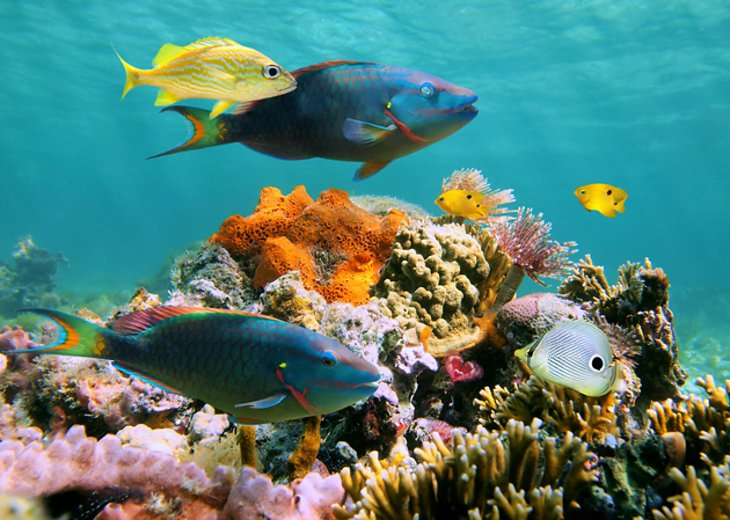
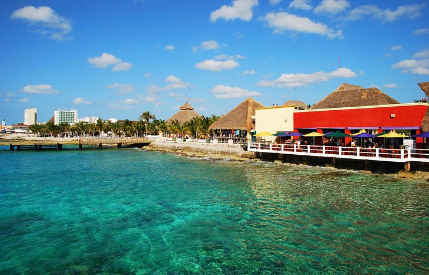
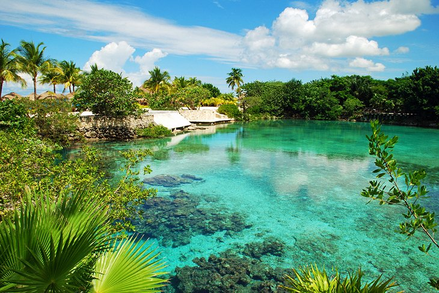
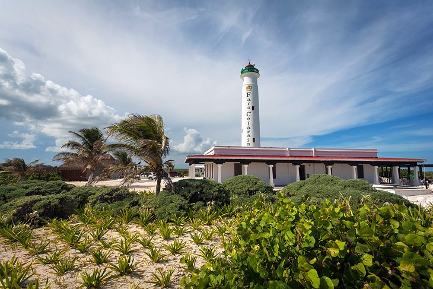
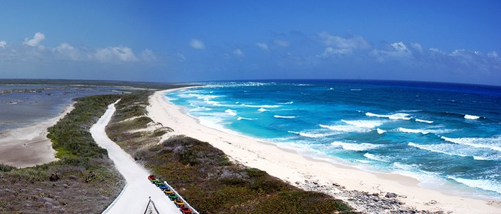

1. Palancar Reef

One of the best spots to dive is the Palancar Reef,
rising from depths of up to 80 meters to shallows
just beneath the surface of the sea at the southwest
end of the island. A popular dive includes a large bronze
figure of Christ placed some 17 meters underwater.
Other good diving locales are on the San Francisco,
Paraíso, Columbia, and Maracaibo reefs,
as well as the Santa Rosa Wall. And pretty much wherever
you dive, you're certain to see such exotic species as
angelfish, nurse sharks, sunfish, and sea turtles.
2. San Miguel de Cozumel

On the northwest side of Cozumel, San Miguel de Cozumel is the island's
capital and offers many interesting distractions. In addition to being
a tourist hub, it's also a busy port. Many ferries depart regularly to
the mainland—particularly to Cancún and Playa del Carmen—and the port
also hosts cruise ships as they ply the sparkling waters of the
Caribbean Sea (be sure to check out the interesting Coral Reefs Monument
salocated near here). The town also boasts a major international airport.
3. Laguna Chankanaab

One of the most interesting natural attractions on Cozumel is Laguna
Chankanaab, a small freshwater lake just seven kilometers south of
San Miguel de Cozumel in the National Marine Park. Cut off from the sea
(apart from a number of underground channels), it's a popular spot for
outings thanks to its crystal-clear water and numerous colorful tropical
fish, and is an enchanting place to swim, snorkel, and scuba dive.
4. San Gervasio

More than 30 Mayan sites have been found on Cozumel, some of them in
beautiful locations such as dense jungle or perched above pristine
beaches. By far the most important is that of San Gervasio, built in AD
800 and located 16 kilometers from San Miguel de Cozumel. Highlights of
a visit include seeing the Temple of Ix-chel, for centuries the focal
point of the island's religious life and a place of pilgrimage from
across the Mayan empire.
5. Celarain: Cozumel's Lighthouse

The best known of Cozumel's lighthouses is Celarain (Faro de Celarain),
30 kilometers south of the capital of San Miguel. Built in 1901 and
recently fully restored with the addition of an interesting maritime
museum in the old lighthouse keeper's home, the lighthouse is perched at
the southernmost tip of the island in the nature reserve known as Parque
Punta Sur and is worth the visit and the climb of its 134 steps for its
wonderful views over the Caribbean Sea. It's a fun little excursion and
perfect for those looking for something that is typically not swamped
with the cruise crowds.
6. Punta Sur Eco Beach Park

A fun place to explore the diversity of Cozumel's coastline
and experience its flora and fauna, the Punta Sur Eco Beach
Park is the largest eco park on the island. Located at the
southern tip of the island, Punta Sur provides plenty of
great swimming and beach fun, as well as a chance to enjoy
some snorkeling, scuba diving, and kayaking. Part of the
240-plus-acre Parque Punta Sur, it's home to a diversity of
beaches, reefs, and lagoons, as well as a forested area
with plenty of walking trails.